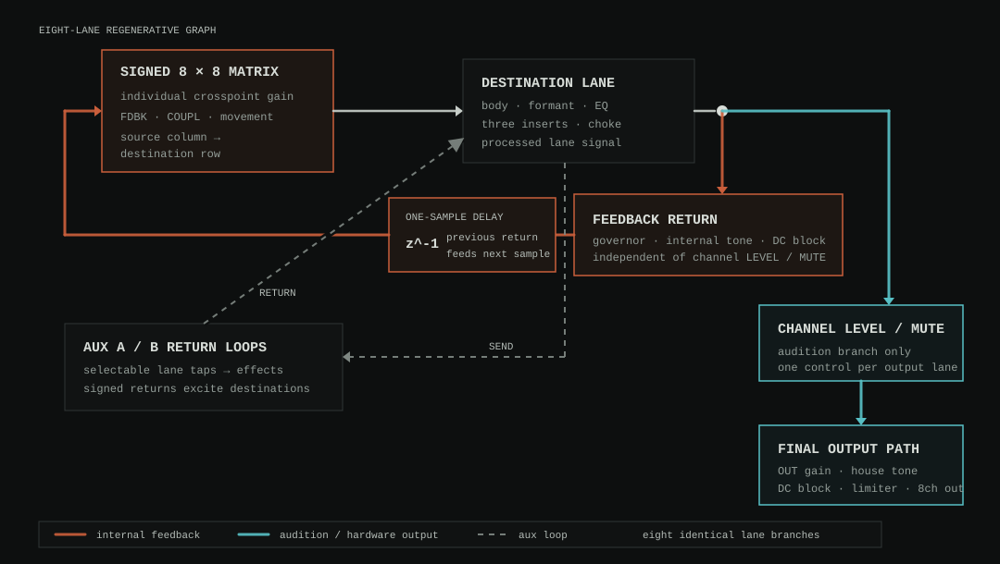

Processor No Input Mixer
s3g Processor No Input Mixer 8ch is a zero-audio-input, fixed eight-output CLAP feedback instrument. Each lane has its own resonant body, formant path, four-band EQ, three serial nonlinear inserts, two aux sends, return memory, level, and meter. A signed 8-by-8 matrix and two effect-bearing aux-return loops couple the lanes into one playable electronic ecology.
The instrument combines no-input mixing, configurable feedback circuits, resonant-object excitation, and s3g Matrix movement. Its controls describe musical feedback behaviors rather than recreating a specific circuit or artist's instrument.
A separate No Input Mixer standalone app embeds the same DSP and adds Stereo Autogain, Quad Autogain, and direct eight-channel Core Audio output without requiring REAPER.
PATCH page. Signed cable shells show the stored topology, while routed-audio waveforms show the signal passing through each connection.Workflow
- Set a REAPER track to eight channels, then insert
s3g Processor No Input Mixer 8ch. No audio pins or MIDI source are required. - Route the eight ordinary output lanes to the intended main speaker outputs, a downstream direct panner, or Output Autogain Stereo/Quad for fold-down monitoring.
- Choose one of the title-band factory presets, or click
RANDOMand chooseHIGH / QUICK,MID / MODERATE, orLOW / SLOWfor a bounded complete-network variation. - Activation injects a deterministic startup packet into the otherwise oscillator-free network. Click
NEWto reseed the current patch without changing its matrix or processors. - Begin on
PATCH. Drag a source port to a destination port to create a route; repeat the gesture or click an already selected cable to dissolve it. Hold Option while connecting for negative polarity. InGRID, click once to patch or select an intersection and click the selected intersection again to dissolve it. - Add a few off-diagonal routes. Positive gains reinforce a destination; negative gains can inhibit, cancel, or frequency-pull it. Movement can animate only the intersections that remain patched.
- Use
CLEAR ALLin either patch view to dissolve all sixty-four connections. With the plugin editor focused, Left/Right moves between logical pages and any detached page windows. - Balance
FDBK,COUPL, andPHASEbefore opening insert gain. These controls determine whether the network settles, beats, bursts, or moves toward its governor. - Select
MIXERfor continuous click-and-drag control of all eight strips, both aux returns, and master tone. Click any lane-slot or aux processor name to choose from the complete effect menu.POPdetaches that exact page without duplicating or relocating controls. - Use
CHANNELto select a lane, setBODY,LOSS,TUNE, andFINE, then shape it with EQ and the three insert slots.LOCKquantizes the resonant body around that lane's MIDI-note target. - Use
AUXto choose where each lane feeds Aux A/B and how each signed return re-enters each destination. - Use
SAFETYfor output and containment settings.PANICremains in the persistent title strip on every page.
MIDI and external controllers are optional. See No Input Mixer MIDI Control for general MIDI mapping, the optional NIM Gesture utility, and the implemented OXI E16 and Intech Grid BU16 setup.
Signal Flow and Gain Stages

LEVEL and MUTE. The upper branch returns through containment without a user send fader; the lower branch controls only the audible eight-channel output.- Eight return memories enter the signed matrix. Each crosspoint, together with
FDBK,COUPL, and movement, determines how much of one source excites one destination. - The destination lane passes that sum through its body, formant path, EQ, inserts, and choke.
- The processed lane splits: one branch passes through the governor, internal tone, and DC block before returning to the matrix; the other passes through channel
LEVEL/MUTEand the final output path.
Matrix crosspoint gain and channel LEVEL are deliberately separate. A crosspoint changes the regenerative graph: it determines how strongly one source return excites one destination and therefore changes stability, spectrum, and interaction. Channel LEVEL, channel MUTE, master OUT, and HOUSE tone sit on the audition branch after the feedback return splits away. Lowering a fader can therefore make a lane quiet at the hardware output without removing its energy from the internal network.
Presets and Randomization
The title-band PRESET menu contains twenty complete starting states. Selecting one applies the global network, all sixty-four matrix gains, eight bodies and EQs, twenty-four insert slots, aux system, and movement state directly to the mixer, applies the current VARIANCE, clears the previous circuit history, and injects a deterministic seed. RANDOM and FORGET use the same immediate complete-recall path.
| Preset | Network identity |
|---|---|
| INIT | The balanced default ring with one active Wool stage per lane. |
| CIRCUIT LATTICE | Pitch-locked, signed mutual excitation through diode and ring cells, with BALANCE listening across each route. |
| RAIN FOREST | Long-time pitch-locked bodies gather around an ATTRACT field while ERODE slowly thins and regrows sparse cross-strikes. |
| WOOL RING | Compressed Wool walls feeding ring-modulated inserts; field and articulation are locked to host tempo. |
| RAT CAGE | Bright hard-clipped cells moving around a directed ring with host-clocked, listening-reactive BURST articulation. |
| ZONE WEB | Alternating focused and wide Zone stages inside a signed mesh, recalled in SCRAMBLE with BALANCE response. |
| NEGATIVE SPACE | Inhibitory routes, AVOID listening, and deep CUT choke create cancellation and unstable gaps. |
| RELAY BLOOM | Gated fuzz cells open into diode recovery as a BLOOM field is articulated by repeated RATCHET windows and fast EDGE listening. |
| OPEN HOUSE | A slow pitch-locked ecology with mixed pre/post aux taps, signed destination returns, and separate internal/house tone. |
| MOBILE CIRCUIT | A host-clocked signed nonlinear circuit whose counter-moving BRAID strands pass through a destination CASCADE under BALANCE response. |
| STATIC CHOIR | A slow, dense tuned network in which Throat, Chorus, and octave voices form a sustained polyphonic field. |
| RAZOR CLOCK | Host-synchronized Logic, Shred, and Crush cells driven by rapid Pulse motion and sharply choked CUT events. |
| SUBHARMONIC WELL | Low pitch-locked bodies feed Oct Down and Oct Stack processors through a deep, slowly moving feedback ecology. |
| SPEECH CIRCUIT | Moving formant bands, Throat and Robot transformations, and ring multiplication make the network behave like a synthetic vocal tract. |
| SPLICE STORM | Clocked buffer slices, Shred, Crush, and destructive BURST articulation create abrupt cut-up structures. |
| PHASE ORCHARD | Pitch-locked Rotor, Phase, and Chorus branches drift slowly through a wide phase-bearing Swirl. |
| LOGIC FLOCK | Logic, Relay, and Robot cells reorganize in unstable clusters under fast SCRAMBLE motion. |
| OCTAVE LADDER | A host-clocked Chase moves among tuned Oct Down, Oct Stack, and Oct Up lanes arranged as an ascending register ladder. |
| AUX MIRROR | Alternating pre/post taps and bipolar destination returns make the two processed aux loops the central routing instrument. |
| WALL ENGINE | A continuously moving, densely coupled saturation wall using Wool, Rat, Zone, fuzz, and diode stages without listening-induced gaps. |
RANDOM is an energy-profile menu rather than one uncorrelated roll. Each choice generates a new deterministic seed and varies the complete matrix, bodies, EQ, tuning and lock states, processor types, insert settings, aux taps and signed destination returns, free-running movement field, listening response, articulation behavior, phase, drift, formant, feedback, and coupling. Random always leaves Tempo Sync off so it cannot unexpectedly lock matrix movement to the host; enable Sync deliberately afterward when wanted. The profile coordinates those dimensions so slow clocks, sparse choke, and deep listening attenuation do not accidentally accumulate into an inaudible start.
| Random profile | Coordinated behavior |
|---|---|
| HIGH / QUICK | Dense signed routing, stronger regeneration and distortion, 1–32 Hz field motion, 4–72 Hz Cut/Burst/Scramble/Ratchet/Cascade articulation with 6–40 ms timed windows and 1–2 ms edges, fast Response, deep choke, and the strongest startup packet. |
| MID / MODERATE | Moderate routing and drive, approximately 0.35–8 Hz field motion, 1–16 Hz Step/Cut/Burst/Scramble articulation with 20–140 ms Cut/Burst windows, and restrained listening depth. |
| LOW / SLOW | Sparse lower-energy coupling with output compensation, continuously moving Flow/Chase/Swirl fields, approximately 0.03–1 Hz motion, smooth Glide behavior without Cut, Burst, Scramble, or choke, shallow Response, and a still-audible startup packet. |
Every profile keeps controller HOLD off, excludes static HOLD as its generated field shape, begins each lane with an immediate processor type, retains diagonal regeneration, leaves the final limiter enabled at -1 dB, and stays inside the DSP's bounded ranges. NEW changes only the excitation seed and uses a strong restart packet. FORGET is a smaller structural mutation applied through the same direct complete-recall path. It reconsiders two to ten off-diagonal crosspoints—the number rises with AGENCY. An existing route may disappear or return with reduced gain and reversed polarity; an empty cell may acquire a quiet new route. One aux send and the movement phase also change. Lane bodies, EQ, inserts, master feedback, output, articulation behavior, and safety settings remain intact, so FORGET disrupts the current solution without replacing the instrument.
Feedback Matrix
The default WIRES view places eight source ports at left and eight destination ports at right. Every route is bipolar from -1.00 to +1.00: orange cables are positive and cyan cables are negative. Positive sends the source return into the destination with its waveform polarity unchanged; negative multiplies it by -1 before the destination sum. Negative therefore means inverted feedback, not simply less feedback. It may cancel or inhibit correlated energy, but phase paths, delays, EQ, and nonlinear inserts can make it excite a different resonance or feedback state instead. The magnitude still sets how much signal is coupled. Drag between ports to connect, repeat to dissolve, or click a cable to select it for exact editing in CROSSPOINT; its POSITIVE/NEGATIVE button reverses the selected route without changing its magnitude. The alternate GRID view reads sources across columns and destinations down rows. Clicking an empty intersection patches and selects it; clicking a different existing intersection selects it without changing its gain; clicking the selected intersection again dissolves it. Option-click creates negative polarity. CLEAR ALL dissolves the complete graph from either view. The signal takes at least one sample of return memory before re-entering the matrix, so the graph never forms an algebraic loop.
Four MIDI 4-by-4 button-grid layouts play the same saved matrix. They can occupy four BU16 modules for simultaneous 8-by-8 access, or the four user pages of one BU16 for page-switched access to one quadrant at a time. Controllers on MIDI channels 1–4 use notes 0–15 as four quadrants: channels 1 and 2 cover destinations 1–4 against sources 1–4 and 5–8; channels 3 and 4 cover destinations 5–8 against those source groups. Each supplied profile sends one native-velocity Note On, changes the held pad to pressure mode, then sends a separate polyphonic-pressure stream. BU16 FLIP moves each existing positive crosspoint toward −1, or each existing negative crosspoint toward +1; release moves back to the saved value and empty points remain empty. BU16 LATCH writes the shared saved matrix. Pressing an empty point creates it from strike velocity; for roughly 50 ms only a larger pressure sample may correct a falsely low attack value, after which pressure is ignored. This attack-peak rule is identical for positive and negative polarity. Release leaves the value latched, and pressing the lit point again removes it. BU16 RAMP applies the same adjustable 20–10000 ms transition to Flip movement and Latch creation/removal; it defaults to 1000 ms. NEW + and NEW − select the polarity for new latch points. Switching Flip/Latch preserves the matrix, while Clear Matrix and Random work in either mode. The processor returns each displayed crosspoint as polyphonic pressure on the same channel and note throughout the ramp: values above the zero center fade the matching BU16 LED s3g orange for positive magnitude, values below center fade it cyan for negative magnitude, and zero turns it off. A periodic complete snapshot resynchronizes reconnected controllers and repopulates the active page of a single-BU16 layout. Current Grid profiles install their MIDI receive callback in System Setup; reload older profile revisions if notes arrive but the LEDs remain dark. The active route is shown in both WIRES and GRID. MIDI channel 16 remains the NRPN, preset, and performance-command channel.
PHASE blends direct returns with short all-pass-bearing paths. DRIFT introduces slow component-like tolerance movement, and FORMANT blends in a normalized product of low- and high-passed body signals. These are part of the feedback behavior rather than post-effects.
| Control | Meaning |
|---|---|
| FDBK | Scales diagonal and local regeneration, extending into the governed region above unity. |
| COUPL | Scales off-diagonal matrix energy without rewriting the stored crosspoint gains. |
| PHASE | Raises the phase-bearing contribution of each return path. |
| DRIFT | Raises deterministic Brownian movement in component and coupling behavior. |
| FORMANT | Raises the multiplicative formant branch globally. |
| AGENCY | Raises state-dependent coupling and the number of relationships a FORGET gesture may reconsider. |
| SPACE | Raises per-route activity hysteresis, allowing genuinely quiet gaps rather than placing a post-gate on the outputs. |
| VARIANCE | Sets bounded deviation when a factory preset is recalled without inventing new crosspoints. |
Matrix Movement
MATRIX MOVEMENT is organized as three serial layers. FIELD allocates energy spatially, BEHAV articulates that allocation in time, and RESP lets measured lane energy reshape it. The FIELD bank offers FLOW, PULSE, CHASE, SWIRL, SCAT, HOLD, BLOOM, BRAID, and ATTRACT. Bloom expands a two-sided route shell from each source, Braid intertwines counter-moving strands, and Attract pulls source routes toward a shared traveling destination. FLOW, SPREAD, VORTEX, Field DEPTH, RATE, and PHASE determine how this first layer scales each patched crosspoint. Field Depth does not set the strength of cuts, steps, or reactions.
The BEHAV bank has its own DEPTH, followed by EVENT, LENGTH, DENSITY, CHAOS, a mode-aware transition control, and CHOKE. GLIDE bypasses the Behavior layer. STEP samples the Field on the event clock. CUT applies a cosine-edged gate, BURST applies a clustered pulse, and SCRAMBLE crossfades between route subsets. RATCHET repeats several cosine windows inside one event, CASCADE sweeps a softened head and trail across destinations, and ERODE removes weaker Field routes in ranked order before smoothly regrowing them. Behavior Depth blends every articulated mode with the unarticulated Field. Controls that do not affect the selected mode are shown as inactive. The transition row reads TRANSITION for Step, XFADE for Scramble, TRAIL for Cascade, SOFTEN for Erode, and EDGE for Cut, Burst, or Ratchet.
LENGTH is the complete Cut, Burst, Ratchet, Cascade, or Erode window. EDGE sets a window edge, XFADE sets the Scramble mask crossfade, TRAIL softens the Cascade head, and SOFTEN controls Erode removal and recovery. Very short Ratchet and Erode lengths are automatically extended only enough to preserve the selected edge time and avoid discontinuities. Cut, Burst, Scramble, Ratchet, Cascade, and Erode feed their windows through an asymmetric LPG circuit: the vactrol-style gain opens over approximately 8–40 ms, closes more slowly over approximately 47–150 ms, and lowers bandwidth as it closes. The transition control extends those circuit times as well as shaping the mode's mathematical window. CHOKE applies the same low-pass-gate behavior after each lane's EQ and three inserts, before its signal returns to the graph and audition output. Use it when saturated feedback refills route-level gaps and makes route cuts less distinct. Glide is transparent, and leaving an articulated mode releases smoothly back to bypass. Destination normalization follows the unmodulated graph, preventing background gain from masking movement.
The RESP bank derives a third route-gain layer from measured lane activity. Its detector listens after the lane body, EQ, and inserts but before Choke, so a closed Choke cannot make the response detector think the underlying circuit has gone quiet. FOLLOW follows source energy, AVOID recedes from active destinations, EDGE responds to threshold crossings, and BALANCE compares source and destination activity. DEPTH reaches a 30 dB range, while THRESH, ATTACK, and RELEASE shape the response. DIRECTION is the deliberate two-state choice NORMAL or INVERT. Response multiplies only patched gains: it cannot invent a connection, reverse its stored sign, or exceed its ceiling.
HOLD, SLOW, and SYNC remain visible below all three banks because they govern the movement system rather than one page. HOLD freezes Field phase, Behavior clocks, and slow drift while the Response detector continues to follow live signal. SLOW extends Field and Event rates down to one cycle per ten minutes. SYNC replaces free rate with host-tempo divisions from 1/64 through 8 BARS, with separate Field and Event divisions. Each bank has its own RND action, so one layer can be regenerated without replacing the matrix or the other two layers.
In WIRES, each bright trace is a 24 kHz scope of the route's measured post-phase, post-gain, post-motion audio contribution, drawn along its cable. Trace shape follows the routed waveform, and visibility follows measured level. The selected route reports dBFS plus its BASE → FIELD → BEHAV → RESPONSE → EFFECTIVE → CHOKE gain stages below the wiring. The same stage readout appears in GRID, where crosspoint brightness and the lower gain-modulation groups show the live route gates, align with their source columns, and sit above eight −60-to-0 dBFS output meters.
GRID view aligns crosspoints, grouped effective-gain indicators, and dBFS output meters by source column.Mixer and Aux Returns
The MIXER page keeps all eight channel strips, both aux returns, and INTERNAL/HOUSE tone visible together. BODY, LOSS, signed local loop gain, low/mid/high EQ, Aux A/B sends, and the output fader all use smooth click-and-drag tracks. Click a processor name in any lane slot or aux return to open its effect menu. The adjacent EDIT action opens the floating Effect Editor for the selected processor. Use the explicit menu to change processor type; MUTE acts immediately.
POP opens the current page in a synchronized independent utility window. The detached page keeps the same controls, values, and gestures as its docked view, but it is not an AppKit child of the host window: it can remain on another display or macOS Space without disappearing when the main plugin window changes focus. PATCH, MIXER, CHANNEL, SAFETY, and AUX can be detached independently; click DOCK to return a page to the main editor. All detached windows remain owned by the plugin and are hidden or destroyed when the host hides or destroys the CLAP GUI.
MIXER page with a lane-slot effect menu open. Its controls and gestures remain synchronized with the docked editor.Aux A and B are genuine internal return loops. Every lane can send independently; each bus has its own dropdown-selected processor from the complete twenty-three-type library, drive, tone, bias, return level, and bounded self-feedback. The dedicated AUX page makes the topology explicit. Each lane and bus selects RETURN, PRE EQ, POST EQ, or POST INSERT as its send tap, then uses a signed -1…+1 destination return. Negative return values invert the processed bus before it excites that lane. The default patch uses RETURN taps and alternating Aux B signs.
AUX page aligns every lane's two sends, tap positions, and signed destination returns so the complete feedback topology can be read and edited as one surface.Each bus also has a global MUTE ALL button. It applies a clickless four-millisecond gate to that processed aux return everywhere in the eight-lane graph, including cross-aux modulation, without erasing any lane's send level. Unmuting therefore restores the preserved aux mix. INTERNAL tone sits inside the feedback ecology, while HOUSE tone affects only the eight audition outputs. This separation allows bright internal energy to sustain a circuit without forcing the same spectrum into the listening system.
Lanes and EQ
The CHANNEL page keeps all eight lane summaries visible while the selected lane's exact body, tuning, EQ, and insert controls occupy the same page. Each of its three insert rows repeats the Mixer's explicit type menu plus EDIT action, so the shared Effect Editor can be opened from either the docked or floating Channel page. BODY moves a four-resonator bank through a different deterministic material variation on every lane. LOSS controls its decay. TUNE is a continuous MIDI-note target, FINE adds ±100 cents, and LOCK suppresses body-frequency drift around that target; using different notes across the eight lanes creates a tuned polyphonic feedback instrument. LEVEL affects only the lane's output audition, while MUTE removes it from the output and allows its internal ecology to continue. KILL clears that lane's body, filters, nonlinear memories, and returns.
The lane EQ contains low shelf, swept mid frequency and gain, and high shelf controls. It sits inside the loop before the inserts, so boosts and cuts alter both timbre and feedback stability.
Processor Inserts
Each lane owns three independently selectable serial slots. Type changes use a short crossfade, and processing can run at 1x, 2x, or 4x quality. The library covers distortion, switching, buffer, modulation, voice transformation, and octave-generation families. Circuit-oriented names describe a transfer-character family rather than an exact hardware replica.
| Type | Character |
|---|---|
| WOOL | Cascaded symmetric saturation with interstage recovery and a passive-style tilt/notch contour. |
| RAT | Frequency-dependent high gain, hard clipping, and a variable post low-pass. |
| ZONE A | Focused upper-mid dual-stage distortion in the broad Metal Zone-inspired family. |
| ZONE B | Lower, wider, asymmetric high-gain behavior with more memory. |
| FUZZ I | Asymmetric soft/hard fuzz with voltage-sag memory. |
| FUZZ II | Gated comparator-like fuzz with hysteresis. |
| DIODE | Biasable diode-style saturation. |
| RING | Bipolar multiplication drawn from the network's changing lane state. |
| RELAY | Hysteretic threshold gate with recovery and controllable contact-like chatter. |
| CRUSH | Sample-rate reduction and variable bit quantization with bias-controlled dither. |
| SPLICE | Short retriggered buffer slices that alternate repeat and reverse reading. |
| LOGIC | Comparator/XOR-like interaction between the lane and a changing network source. |
| SHRED | Multiband saturation, folding, and hard clipping for dense wall behavior. |
| VOID | Envelope-threshold dropouts with unstable asymmetric reopening. |
| ROTOR | Internal low-frequency amplitude modulation with continuously skewed pulse shape. |
| PHASE | Four-stage swept all-pass cancellation with variable center frequency. |
| CHORUS | Fractionally read modulated delay with signed regeneration. |
| THROAT | Dual moving formant bands for vowel and apparent vocal-size transformation. |
| ROBOT | Internal sine-to-square carrier multiplication for robotic voice spectra. |
| OCT DOWN | Tracked zero-crossing divider with envelope-shaped sub-octave output. |
| OCT UP | DC-compensated full-wave octave generation with variable tone. |
| OCT STACK | Continuously balanced upper- and lower-octave generation. |
The underlying GAIN, TONE, BIAS, and LEVEL parameters are interpreted musically for the selected family. The floating editor names that interpretation directly: SPLICE presents MIX, LENGTH, and DIRECTION; ROTOR presents DEPTH, RATE, and SHAPE; THROAT presents MIX, VOWEL, and SHIFT; OCT STACK presents MIX, TONE, and BALANCE. The generic bipolar −1 to +1 Bias parameter therefore controls an effect-specific third macro; it is not matrix or Aux-return polarity. BYPASS removes only the selected lane slot. Aux editing substitutes RETURN and LOOP for lane level and bypass. In the plugin or standalone app's MIXER popup, click the Aux A/B EDIT action to expose its third macro, exact label, and signed value.
Containment
Per-lane RMS and peak observers drive a slow feedback governor only when loop energy becomes unsafe. Normal transients are not treated as compressor input. Optional DC blocking surrounds the feedback path, and eight independent ceiling limiters protect the final outputs. The monitor reports QUIET, STABLE, EDGE, or RUNAWAY.
PANIC remains visible in the title strip on every page. It ramps the outputs down, clears all feedback, resonator, filter, oversampling, and limiter memories, and rearms from silence. It does not automatically reseed; click NEW when a fresh excitation is wanted.
Automation and State
The plugin exposes 402 CLAP parameters for host automation: 58 globals; all sixty-four signed matrix gains; seventeen direct controls per lane, including tuning and aux topology; and six controls per insert slot. Continuous sound controls advertise CLAP modulation, and parameter/modulation events take effect at their sample offsets inside each process block. Project state stores the complete mixer, selected lane/slot/source/destination, independent Behavior depth, BU16 mode, new-point sign and ramp time, and editor page. State loading supplies conservative defaults for controls omitted from older stored data; version-eight and earlier projects initialize Behavior Depth from their former shared movement depth. Retired Parameter Surface data and unused parameter IDs 55/56 do not participate in the DSP after migration.